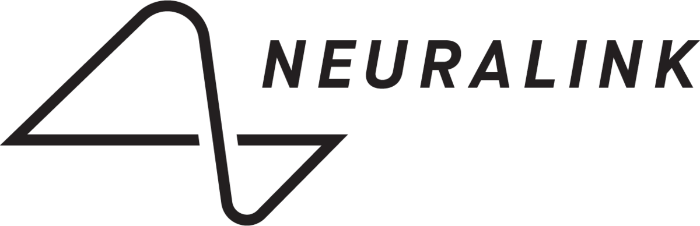

ICO
Un ICO en neuro-technologie (Interface Cerveau-Ordinateur) est un système permettant une communication directe entre le cerveau humain et un dispositif externe, souvent utilisé pour contrôler des appareils ou interpréter l'activité cérébrale à des fins médicales, scientifiques ou technologiques.
ICM
Un ICM en neuro-technologie (Interface Cerveau-Machine) est une technologie qui établit une connexion directe entre le cerveau humain et une machine, permettant d'interagir avec des dispositifs mécaniques ou électroniques en interprétant les signaux neuronaux.
Neurotechnologique
La neuro-technologie désigne l'ensemble des technologies qui explorent, mesurent, modifient ou interagissent avec le système nerveux, souvent dans le but de comprendre le fonctionnement du cerveau, traiter des troubles neurologiques ou améliorer les capacités humaines.
Neuralink
